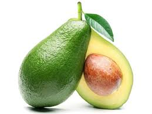

Rooftop Gardens
What is a rooftop garden?
Rooftop gardens are man-made green spaces on the topmost levels of industrial, commercial, and residential structures. They may be designed to grow produce, provide play space, give shade and shelter, or simply be there as a living, green area. There are two main types of gardens: extensive and intensive. Extensive gardens require minimal maintenance and behave as another from of roofing material. Intensive gardens are created with the intent of active human use.
Why is it important?
Rooftop gardens are great features to transform urban homes into peaceful and eco-friendly environments . If you live in an apartment or a house without a backyard, rooftop gardens give you the opportunity to tend to a variety of plant and grow your own fresh produce. Rooftop gardens also help mitigate the downsides of urban life, such as curbing noise pollution, providing insulation in the winter and keeping temperatures cool in the summer.
Making your own rooftop garden
First, make sure you find out about local laws and regulations regarding rooftop gardens, before spending time and money into them. Then, get an architect or contractor involved to make sure that your building is safe enough to build a garden on and can support the extra weight.
What can you plant?
